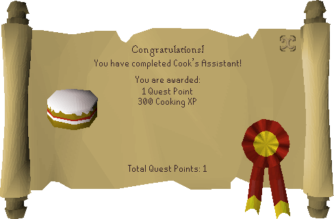

Cook's Assistant

Description
The Lumbridge Castle Cook is in a terrible mess. Today is the Duke of Lumbridge's birthday and the Cook is in charge of baking him a lovely big birthday cake. However, the Cook needs a lot of ingredients but he has forgotten to buy any of them. He'll never get them in time now. Worse, he'll be beheaded! What is he going to do? He has a wife, four children, and a goat to look after. Will you, the adventurer, help him in his predicament?
Required Items
- Bucket
- Pot
- Egg
- Bucket of milk
- Pot of flour
Steps
Starting out
Begin the quest by speaking to the Cook in the Lumbridge Castle kitchen. A bucket is available in the cellar of Lumbridge Castle, and a pot in the kitchen where you begin; be sure to grab these as they are nearby and you will need them later. Both can also be purchased from the Lumbridge General Store for 2 coins and 1 coin, respectively.
Egg
- Go east out of Lumbridge Castle.
- Run north along the path until you reach the chicken coop north-west of Farmer Fred's house.
- Go into the chicken coop and pick up an egg from the ground.
Bucket of milk
- From the chicken coop, with an empty bucket, go north into the cow pasture.
- Use the empty bucket on the dairy cow to obtain a bucket of milk.
- Optional: You may talk to Gillie Groats in the Lumbridge cow field across the river to the east for an explanation on how to get milk from a cow. There is also another dairy cow right next to her there.
Pot of flour
- Leave the cow pasture, with an empty pot, and go south-west to the wheat field.
- Pick up a bundle of grain.
- Leave the wheat field and enter the nearby Mill Lane Mill to the north-east.
- Optional: You may talk to Millie Miller inside the mill for an explanation on how to make flour.
- Climb up the ladder to the top floor.
- Put the grain in the hopper.
- Pull the lever.
- Climb back down the ladder to the 1st floor.
- Using your empty pot, collect the flour from the flour bin to obtain a pot of flour.
Delivery
After collecting all three ingredients, return to Lumbridge Castle by following the path south-east of the mill and speak to the Cook in the kitchen to deliver them.
Quest complete!

Quest List